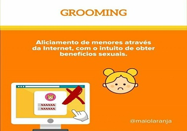
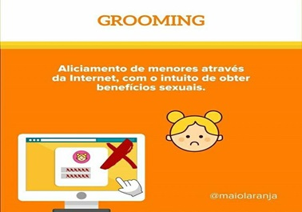
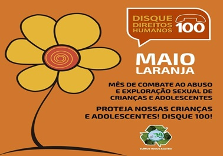

Quem somos
A história do Protege Kids começa em uma roda de quatro jovens meninas, estudantes de enfermagem, que tem a ideia de desenvolver um TCC (Trabalho de Conclusão de Curso) sobre ‘’influência da tecnologia digital no assédio sexual infantil’’, onde tem como objetivo alertar os pais/responsáveis do grande risco que seus filhos acabam correndo no mundo digital hoje em dia, então, decidimos junto a nossa orientadora durante o desenvolvimento do nosso projeto criarmos um site para ampliar as informações sobre os riscos que existem hoje pela internet.
Na aba menu você terá acesso a diversas informações, jogos confiáveis que seu filho pode acessar, dicas de como alertar o seu pequeno e até mesmo vídeos e livros educativos. Então corra agora para acessar o nosso menu e se manter informado.
Clique aqui para fazer o Download em PDF da nossa pesquisaAssédio infantil online, você sabe o que é?
O assédio online ocorre mesmo quando não envolve o contato físico, estranhos podem molestar crianças, por exemplo: expor órgãos genitais a uma criança, mostrar imagens e vídeos pornográficos ou tirar fotos da criança para fins obscenos. Lembre-se de que o uso de computadores e redes sociais é um fato corriqueiro na vida das crianças hoje em dia.
Independente da classe social, essas crianças nasceram em uma sociedade globalizada, chamada pelo sociólogo espanhol Manuel Castells de sociedade em rede, onde a mesma se desenvolve rapidamente junto da TIC (Tecnologia da Informação e da Comunicação), o que acaba sendo uma porta de entrada para casos como de aliciamento para fins de abuso, exploração sexual, assédio sexual online e em alguns casos até tráfico internacional de menor.
Por que devo saber o que meu filho faz na internet?
O Assédio também pode acontecer através de aplicativos e plataformas digitais.
A pedofilia é uma doença, um desvio de sexualidade, que leva o individuo adulto a se sentir sexualmente atraído por crianças e adolescentes de forma compulsiva e obssesiva, podendo levar ao abuso sexual. O pedófilo tem usado as redes sociais para criação de perfil falso, com isso, começa a ganhar a amizade de várias crianças pelos ambientes virtuais, passando-se por criança, seduzindo a vítima até que o mesmo consiga realizar seu objetivo doentio.
Por este motivo é muito importante, que os pais tenha conhecimento do que o filho pesquisa na internet, com quem fala e quais os jogos que possui no celular/tablet.
Como falar sobre educação sexual com o meu filho?
O meio mais correto de abordar o sexo em relação à criança é, segundo os psicólogos, tratar de assuntos adequados e apropriados à idade e ao desenvolvimento das mesmas, além de sempre responder as curiosidades das crianças, ainda que certas respostas causem uma reação de embaraço aos pais e aos filhos. Através dessa conversa, os pais estarão preparando seus filhos e educando-os de forma saudável, a fim de evitar constrangimentos futuros e de prepará-los para evitar assédios e abusos.
OBSERVAÇÃO: Os pais devem sempre orientar seus filhos em quais partes do corpo elas podem ou não ser tocadas. Para que isso se torne algo dinâmico e de fácil entendimento para a criança foi criado o “Semáforo do toque”, que é uma brincadeira que tem viralizado nas redes sociais. A brincadeira consiste em orientar as crianças onde elas podem e onde elas não podem ser tocadas, fazendo uma associação às cores do semáforo de trânsito. Brincando elas aprendem que não podem ser tocadas nos seios, partes íntimas e coxas. Lembrando que, esse ensinamento deve vir de casa e não somente da escola.
Semáforo do toque
Uma forma didática de explicar a criança onde ela pode e onde não pode ser tocada, baseado em algo que ela observa em seu dia a dia: o semáforo!

Você sabia que o abuso nem sempre envolve o contato fisíco?
 

Sinais de alerta que pode indicar abuso sexual infantil
1. Mudanças de comportamento
Mudança no padrão de comportamento da criança, como alterações de humor entre retraimento e extroversão, agressividade repentina, vergonha excessiva, medo ou pânico.
2. Proximidades excessivas
O abusador muitas vezes manipula emocionalmente a criança, que não percebe estar sendo vítima e, com isso, costuma ganhar a confiança.
3. Comportamentos infantis repentinos
Se a criança/adolescentes voltar a ter comportamentos infantis, os quais já abandonou anteriormente, é um indicativo de que algo esteja errado.
4. Silêncio predominante
É essencial explicar à criança que nenhum adulto ou criança mais velha deve manter segredos com ela que não possam ser compartilhados com pessoas de confiança, como o pai e a mãe, por exemplo.
5. Mudanças de hábitos súbitas
Uma criança vítima de violência, abuso ou exploração também apresenta alterações de hábito repentinas. O sono, falta de concentração, aparência descuidada, entre outros, são indicativos de que algo está errado.
6. Comportamentos sexuais
Crianças que apresentam um interesse por questões sexuais ou que façam brincadeiras de cunho sexual e usam palavras ou desenhos que se referem às partes intimas podem estar indicando uma situação de abuso.
7. Traumatismos físicos
Os vestígios mais óbvios de violência sexual em menores de idade são questões físicas como marcas de agressão, doenças sexualmente transmissíveis e gravidez.
8. Enfermidades psicossomáticas
Problemas de saúde, sem aparente causa clínica, como dor de cabeça, erupções na pele, vômitos e dificuldades digestivas, que na realidade têm fundo psicológico e emocional.
9. Queda no rendimento escolar
Observar queda injustificada na frequência escolar ou baixo rendimento causado por dificuldade de concentração e aprendizagem.
Você conhece o maio laranja?
A secretaria Nacional dos Direitos da Crianças e do Adolescente (SNCA) apoia um projeto de lei para regulamentação da campanha Maio Laranja que é lembrado no dia 18 de maio, em homenagem á jovem Araceli, assassinada de maneira brutal em 1973, no estado do Espírito Santo, aos 8 anos de idade.
Por este motivo, 18 de maio é considerado o Dia Nacional de Combate ao Abuso e Exploração Sexual de Crianças e Adolescentes.
Confira no instagram: @MaioLaranja e faça parte dessa causa
Qual objetivo do #MaioLaranja ?
Dar voz e mídia ao assunto da exploração e abuso infantil no Brasil
Conheça os canais de denúncia
Dicas
1. Para que as crianças aprendam a estabelecer limites nas relações com outras crianças e com adultos, identificando toques que são legais de receber e aqueles que causam qualquer tipo de sentimento ruim, estaremos disponibilizando um vídeo do Youtube criado pela campanha Defende-se, com uma linguagem acessível, amigável e de fácil entendimento.
Link do Youtube:
2. Para que possamos evitar esse tipo de assédio online, aqui vai algumas dicas de como proteger o seu filho no mundo virtual:
- Coloque o computador em um lugar da casa em que todos tenham acesso, e não no quarto das crianças. É muito mais difícil para o delinquente tentar um assédio quando o computador estiver, por exemplo, em um lugar em que muitos tenham acesso. Com certeza, estes delinquentes irão questionar isso a seus filhos antes do aliciamento;
- Examine semanalmente o correio eletrônico de seu filho;
- Ensine seu filho a usar corretamente o serviço de e-mail;
Passe as seguintes instruções a seus filhos:
- Não falar de sua vida pessoal com pessoas que conhecer via internet;
- Nunca enviar fotos sua ou de seus familiares;
- Jamais fornecer nomes, endereços, nomes de amigos e números de telefone;
- Nunca responder a mensagens obscenas ou agressivas que fale sobre sexo;
- Para tomar cuidado com o que dizem a ele pela internet, pois pode ser mentira.
3. Não sabe como bloquear sites ou ativar controle de pais no celular dos seus filhos? Aqui estão alguns vídeos para te ajudar:
Como bloquear acesso de alguns sites no computador:
Vídeos educativos:
Livros educativos:
Não me toca, seu boboca!
Conte pra alguém
Sites educativos: Defenda-se.com
Programas educativos: Que corpo é esse? (Canal futura)
Aplicativos
Family Link:
É um app que proporciona aos pais a segurança de seus filhos menores de 13 anos em seus smartphones. Neste app é possível bloquear remotamente o download de outros app, é possível controlar o tempo em que a criança fica conectada (ex.: o pai pode definir um horário de bloqueio do smartphone para incentivar o seu filho a fazer atividades ao ar livre), os pais neste app também a opção de receber um relatório mostrando o tempo de conexão da criança. Além do mais o app pode localizar o dispositivo da criança.
Preço: Gratuito
Disponivel: iOS, Android e Chromebook
ESET Parental Control:
É oferecido com dois planos o GRATUITO e o PREMIUM. Neste app os menores podem solicitar exceções por meio do sistema controle parental
Gratuito:
Permite que os pais determinem permissões de acesso a apps, surpervisionamento das atividades das crianças. Trás também o recurso de limitar o tempo em app de jogos e demais app.
Premium: R$79,00 Plano anual
Disponibiliza acompanhamento online, permite bloqueio de sites inapropriados, podendo ser por site específico ou por faixa etária. Conta também com o recurso de rastreio do aparelho.
Disponível: iOS e Android
Youtube Kids:
Nas configurações, os pais podem definir um limite de tempo para que os filhos acessem o aplicativo e, se desejarem, também podem desligar a pesquisa.
Preço: Gratuito Disponível: iOS e AndroidKaspersky Safe Kids:
Permite o bloqueio a sites e app inadequados, muitos já são bloqueados pelo próprio app e também um adulto pode incluir app/sites para serem bloqueados. Esta é a versão gratuita.
Preço: Gratuito e Premium - R$49 AnualPremium:
Permite que os pais acompanhem as publicações de seus filhos nas redes sociais e o aumento de amigos aceitos diariamente.
Disponível: iOS e AndroidJogos educativos e Interativos
Play Kids:
O Play Kids conta com conteúdos educativos, atividades e jogos para crianças de 2 a 8 anos de idade. No total, a plataforma disponibiliza mais de 3 mil vídeos, livros, jogos e desenhos. O objetivo do app é estimular as habilidades indivíduais, o trabalho em equipe e a consciência dos pequenos sobre o mundo
Disponível: Android e iOsPou / My Talking Tom:
Ao longo do dia, o bichinho fica sujo e precisa de banho; fica com fome e precisa de comida; fica entediado e precisa de carinho. Para crianças, é uma fonte de aprendizado sobre responsabilidades e deveres. Para cada tarefa, moedas são acumuladas para que Pou possa ter novas roupas e acessórios. Entre as diversões alternativas, há minigames de quebra-cabeça e outros games sociais para competir com amigos que também cuidem de seu próprio Pou - como os jogos sociais.
Disponível: Android e iOsABC Português:
Destinado para as crianças em fase de alfabetização, já que todas as atividades aqui possuem o aprendizado infantil como objetivo fundamental. Jogos de alfabeto, exercícios de memorização, cálculos simples e muitos outros recursos estão presentes no aplicativo, que também possui um visual infantil e é repleto de desenhos coloridos que cativam as crianças.
Disponível: Android.94 Segundos:
Nesse jogo, você recebe uma letra e um tema. Precisa dar o máximo de respostas certas com eles, tudo em 94 segundos.
Disponível: Android e iOs94 Graus:
“Onde fica o México?” “Quais são os músculos peitorais?” Esse jogo faz perguntas e dá um desenho onde o jogador marca sua resposta com pins. E o simpático crocodilo do jogo avisa se a resposta está “fria” ou “quente” até a certa.
Disponível: Android e iOs